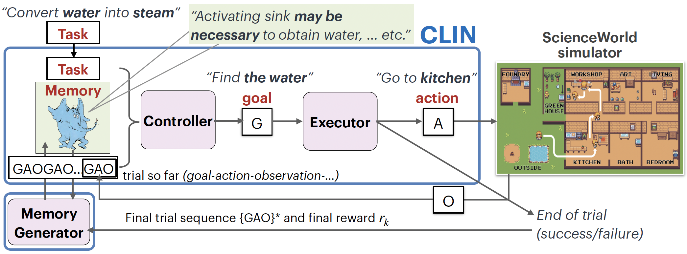
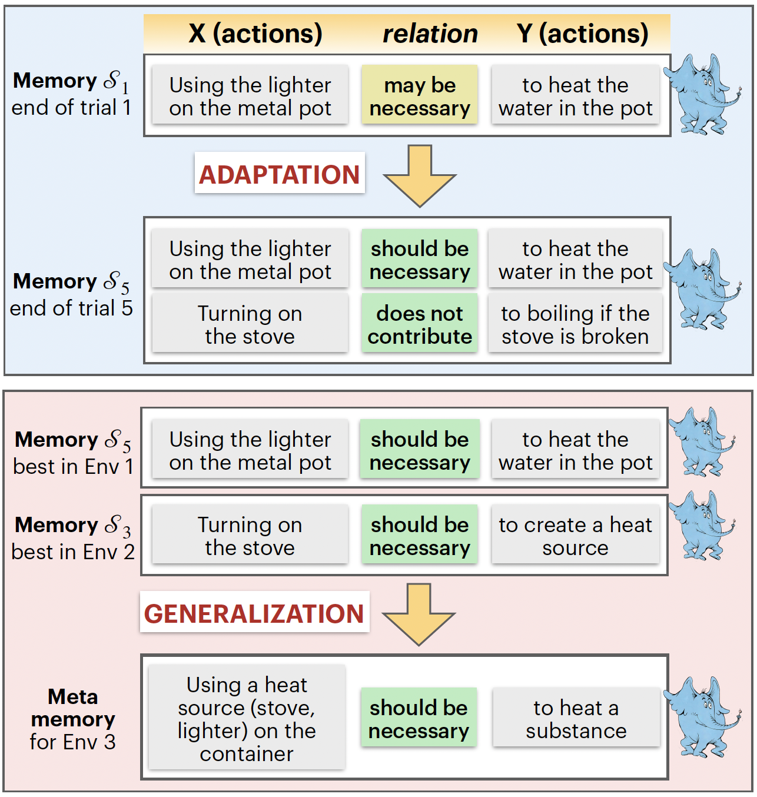
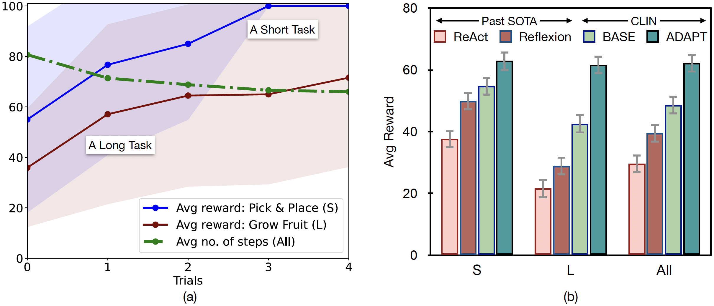
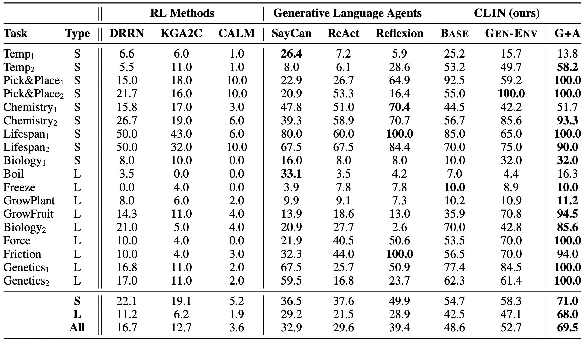
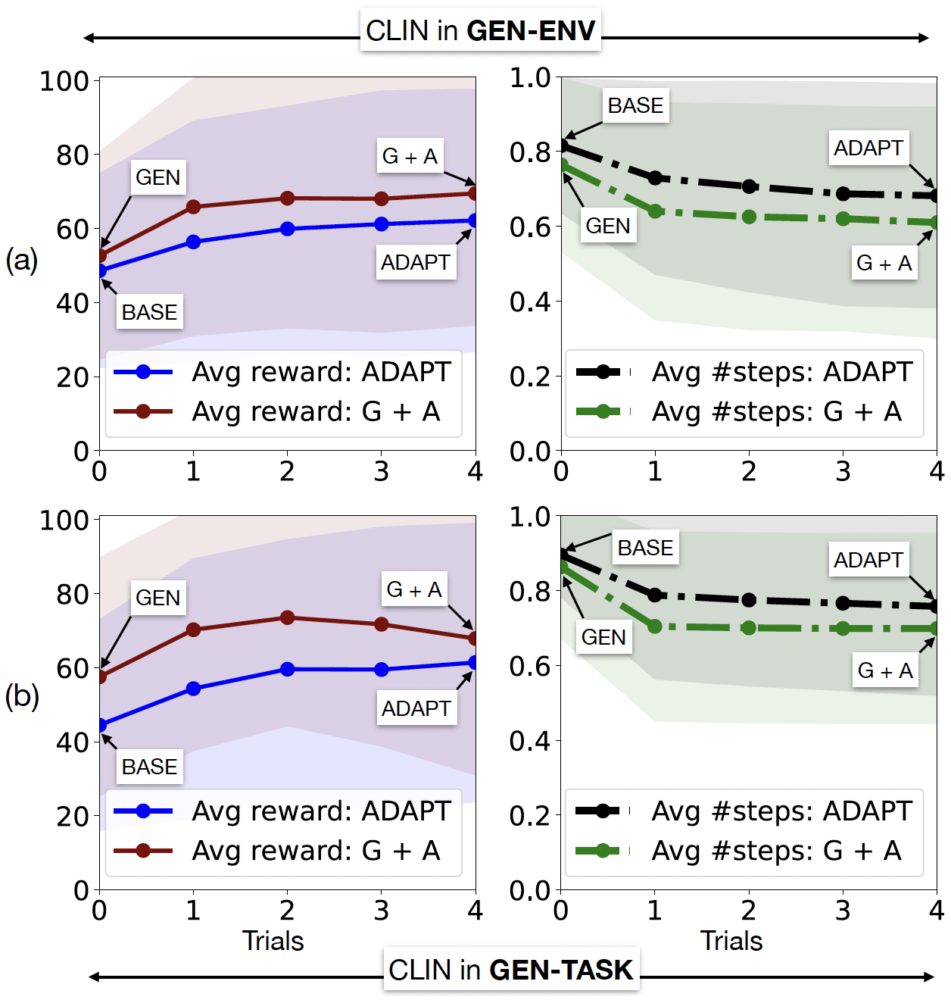

Abstract
Language agents have shown some ability to interact with an external environment, e.g., a virtual world such as ScienceWorld, to perform complex tasks, e.g., growing a plant, without the startup costs of reinforcement learning. However, despite their zero-shot capabilities these agents to date do not continually improve over time, beyond performance refinement on a specific task. Here we present CLIN, the first language-based agent to achieve this, so that it continually improves over multiple trials, including when both the environment and task are varied, and without requiring parameter updates. Our approach is to use a persistent, dynamic, textual memory, centered on causal abstractions (rather than general "helpful hints"), that is regularly updated after each trial so that the agent gradually learns useful knowledge for new trials.
In the ScienceWorld benchmark, CLIN is able to continually improve on repeated trials on the same task and environment, outperforming state-of-the-art reflective language agents like Reflexion by 23 absolute points. CLIN can also transfer its learning to new environments (or new tasks), improving its zero-shot performance by 4 points (13 for new tasks) and can further improve performance there through continual memory updates, enhancing performance by an additional 17 points (7 for new tasks). This suggests a new architecture for agents built on frozen models that can still continually and rapidly improve over time.

- CLIN creates (Trial1) or adapts (Trial2+) a memory of causal abstractions to help in future trials by reflecting on the last trial and current memory. It does this using a suitably prompted LLM to generate the updated memory.
- Reflecting on Trial1, CLIN notes in memory that going to the kitchen helped with finding seeds, enabling it to find the seeds faster in Trial2. From there, it also learns that moving the seeds to the pot helped plant the seeds.
- To further generalize across episodes (sequences of trials, right figure) for use in new environments, CLIN generates a summary ("meta-memory") of the best (starred) memories from each prior episode, here generating the generalization that moving to different rooms helps finding objects.
Architecture
In CLIN, a controller takes the current task, retrievals from memory, and the trial so far, to generate the next goal to achieve. The executor then converts this to a valid action to perform towards that goal. The simulator then performs the action and returns an observation of that action's effect. Memory is updated at the end of each trial by the memory generator.
Memory
CLIN memory uses two relations: "necessary" and "does not contribute" to semantically abstract past actions. It also uses the linguistic uncertainty measures: "may" and "should" to assert degree of confidence on abstracted learning.
CLIN shows rapid adaptation
Rapid and Efficient: (a) CLIN readily adapts on both short and long tasks. CLIN becomes more efficient in later trials by solving the tasks with a lower number of (average) steps. (b) CLIN outperforms state-of-the-art Reflexion by 23 absolute points.
CLIN shows efficient generalization
Positive Transfer: CLIN beats previous Reinforcement Learning agents and Language agents with positive transfer learning. With both generalization followed by adaptation, CLIN become state-of-the-art without using any gold trajectories as demonstration. Both in generalization over unseen environments (a) and tasks (b), CLIN takes fewer steps compared to no-generalization setup and achieves better performance.
Related Readings
Concurrent work (Voyager, ExpeL) supports the idea of non-parametric continual learning for language agents. Our work builds on team's previous work interactive teaching system with continual feedback and self-refining abilities of large language models. Follow the ScienceWorld project to know more about the benchmark and baseline models.
BibTeX
@article{majumder2023clin,
author = "Majumder, Bodhisattwa Prasad and Dalvi Mishra, Bhavana and Jansen, Peter and Tafjord, Oyvind and Tandon, Niket and Zhang, Li and Callison-Burch, Burch and Clark, Peter",
title = "CLIN: A Continually Learning Language Agent for Rapid Task Adaptation and Generalization",
journal = "arXiv",
year = "2023",
}